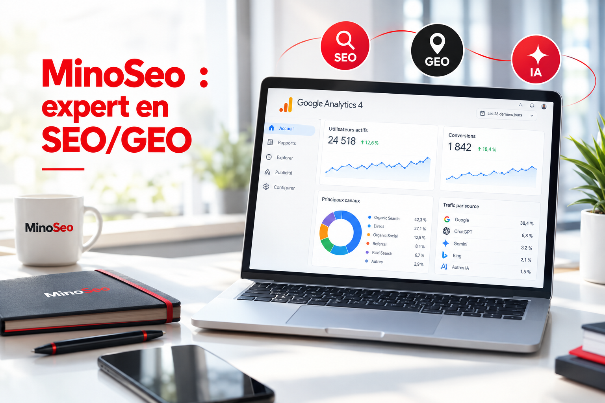
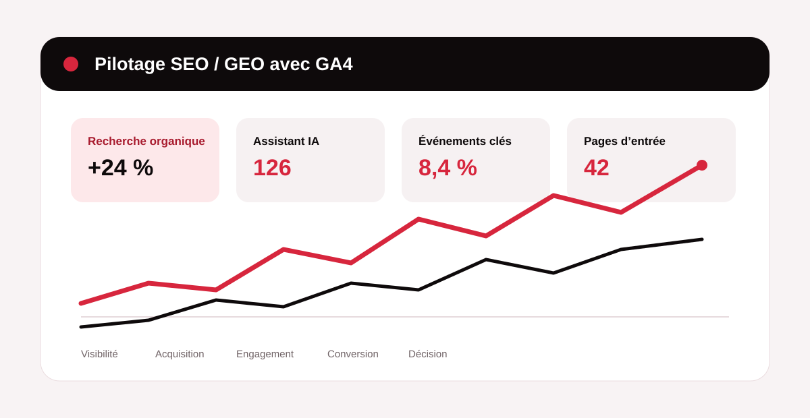

Pour piloter une stratégie de SEO et GEO, il faut distinguer visibilité et performance. La Search Console renseigne surtout ce qui se passe avant le clic dans Google ; Google Analytics 4 observe ce que les visiteurs font une fois arrivés sur votre site. C’est ce deuxième niveau qui permet de relier acquisition, engagement et conversion.
Chez MinoSeo, agence SEO/GEO depuis plus de 15 ans, nous considérons donc GA4 comme un outil de décision : sa valeur dépend moins du nombre de graphiques disponibles que de la qualité du paramétrage, des événements suivis et des questions business posées aux données.

1. Comprendre ce que GA4 apporte réellement au pilotage SEO/GEO
GA4 mesure les sessions, les utilisateurs, les pages d’entrée, l’engagement et les événements. Il répond à des questions très concrètes : quelles pages attirent le trafic organique ? Les visiteurs consultent-ils plusieurs contenus ? Remplissent-ils un formulaire ? Cliquent-ils sur un téléphone ou une adresse e-mail ? Les visiteurs issus d’un assistant IA se comportent-ils différemment de ceux provenant de Google ?
En revanche, GA4 n’est pas l’outil principal pour connaître vos positions, vos impressions ou les requêtes exactes ayant déclenché votre apparition dans Google. Pour cela, l’association avec Search Console est indispensable. Une analyse fiable croise donc les deux univers au lieu de chercher à tout faire entrer dans un seul rapport.
2. Sécuriser 4 réglages avant d’interpréter vos performances
Réglage n°1 : connecter Search Console à GA4
L’association entre votre flux Web GA4 et votre propriété Search Console rapproche les données de recherche et les comportements sur le site. Vous obtenez notamment des rapports consacrés aux requêtes organiques Google et au trafic de recherche naturelle. Pensez aussi à publier la collection Search Console dans la bibliothèque des rapports si elle n’apparaît pas dans votre navigation.
Réglage n°2 : transformer les actions importantes en événements clés
Une hausse de trafic n’a de valeur que si elle soutient un objectif. Identifiez donc les actions qui matérialisent une intention commerciale : envoi d’un formulaire, clic vers l’e-mail, appel, téléchargement d’un document, inscription ou demande de devis. Dans GA4, ces actions peuvent être suivies comme événements puis marquées comme événements clés.
Réglage n°3 : nettoyer le trafic interne et les référents indésirables
Les visites répétées de vos collaborateurs, prestataires ou développeurs peuvent déformer les statistiques, surtout sur un site à audience modérée. Configurez le trafic interne lorsque cela est pertinent. Vérifiez également les référents indésirables : un prestataire de paiement, par exemple, ne doit pas récupérer artificiellement le crédit d’une conversion initiée par le SEO.
Réglage n°4 : vérifier consentement, balisage et cohérence de collecte
Une bannière de consentement mal reliée au balisage peut créer des écarts importants. Contrôlez le déclenchement des tags, le fuseau horaire de la propriété, les domaines suivis et la présence de la balise sur les pages stratégiques. L’objectif n’est pas d’obtenir des chiffres « parfaits », mais des données suffisamment cohérentes pour comparer les tendances dans le temps.
Vos données GA4 sont-elles assez fiables pour guider votre SEO ?
Avant de multiplier les optimisations, un audit SEO/GEO peut identifier les écarts entre visibilité, trafic, pages d’entrée et conversions afin de prioriser les actions les plus utiles.
Demander un audit gratuit3. Exploiter les 5 rapports GA4 les plus utiles pour le référencement
| Rapport | Question SEO | Décision possible |
|---|---|---|
| Acquisition de trafic | Quelle place occupe la recherche organique ? | Comparer les canaux et leur contribution aux événements clés. |
| Page de destination | Quelles pages font entrer les visiteurs ? | Renforcer, réécrire ou mieux convertir les pages à fort potentiel. |
| Trafic organique Google | Quels contenus relient clics Google et comportement ? | Croiser Search Console et engagement sur les pages d’entrée. |
| Requêtes organiques Google | Sur quelles recherches le site gagne-t-il de la visibilité ? | Détecter de nouveaux sujets et intentions à travailler. |
| Pages et écrans | Quels contenus sont réellement consultés ? | Identifier les contenus forts, les impasses et les besoins de maillage. |
Rapport 1 : Acquisition de trafic, pour situer le SEO dans votre mix
Commencez par comparer la recherche organique aux autres canaux sur une période significative. Observez les sessions, l’engagement et les événements clés. Une croissance SEO saine ne se limite pas à davantage de visites : elle doit idéalement améliorer la qualité des entrées et contribuer aux objectifs commerciaux.
Rapport 2 : Page de destination, pour évaluer chaque porte d’entrée
Le rapport des pages de destination est l’un des plus actionnables. Filtrez sur la recherche organique et repérez trois profils : les pages qui attirent et convertissent, celles qui attirent mais convertissent peu, et celles qui convertissent bien mais manquent encore de visibilité. Chaque profil appelle une action différente : optimisation de conversion, enrichissement éditorial, optimisation SEO ou renforcement du maillage interne.
Rapports 3 et 4 : exploiter les données Search Console intégrées
Les rapports Search Console donnent une lecture complémentaire : pages de destination, clics, impressions et requêtes. Ils sont particulièrement utiles pour repérer une page dont la visibilité progresse mais dont l’engagement reste faible, ou un sujet qui génère des impressions sans obtenir suffisamment de clics. Attention toutefois : une requête Search Console ne doit pas être présentée comme la cause directe d’une conversion GA4.
Rapport 5 : Pages et écrans, pour comprendre la consommation du contenu
Ce rapport permet de voir les contenus les plus consultés, y compris après la page d’entrée. Il aide à évaluer la profondeur de navigation et à repérer les pages qui jouent un rôle d’assistance dans le parcours. Pour le GEO, ces contenus détaillés — guides, définitions, comparatifs, réponses précises — sont aussi ceux qui peuvent renforcer la compréhension de votre expertise par les moteurs génératifs.

4. Mesurer le trafic provenant de ChatGPT, Gemini et des assistants IA
Depuis 2026, GA4 dispose d’un canal par défaut dédié aux assistants IA reconnus. Dans le rapport Acquisition de trafic, le canal « AI Assistant » permet d’isoler une partie des sessions issues d’outils comme ChatGPT, Gemini, Copilot, DeepSeek ou Grok lorsque l’origine de la visite est transmise et reconnue.
Examiner la source de session, pas seulement le canal
Ajoutez la dimension « Source de la session » ou « Source / support de la session » afin de distinguer les assistants. Selon les cas, vous pourrez retrouver des sources comme chatgpt.com ou gemini.google.com. Certains assistants ou anciennes visites peuvent toutefois apparaître dans Referral, Direct ou Non attribué. Le volume mesuré doit donc être considéré comme une base observable, pas comme l’intégralité de l’influence de l’IA.
Ne pas confondre assistants IA et expériences IA de Google
Les clics issus des expériences génératives intégrées à Google, telles que les AI Overviews ou AI Mode, restent rattachés à la recherche organique et ne sont pas isolés dans le canal AI Assistant. Cela signifie qu’une progression de la visibilité GEO peut influencer votre trafic organique sans créer une ligne « IA » parfaitement séparée dans GA4.
Comparer la qualité du trafic IA avec le SEO classique
Le volume seul est insuffisant. Comparez le taux d’engagement, les pages d’entrée et surtout les événements clés. Un assistant peut envoyer peu de sessions mais des visiteurs déjà très avancés dans leur réflexion. À l’inverse, un pic de trafic IA sans conversion ne justifie pas automatiquement une hausse d’investissement. Analysez idéalement ces données sur plusieurs mois pour éviter les conclusions tirées d’échantillons trop faibles.
Votre visibilité évolue avec les nouveaux parcours de recherche
MinoSeo peut vous aider à relier SEO, GEO, contenu et mesure de performance pour savoir quelles actions soutiennent réellement votre acquisition.
Découvrir l’accompagnement SEO/GEO5. Construire un tableau de bord qui aide vraiment à décider
Un reporting premium n’est pas celui qui affiche cinquante métriques. Il répond rapidement à quelques questions : la visibilité progresse-t-elle ? Quelles pages génèrent les meilleures entrées ? Les visiteurs organiques réalisent-ils les actions attendues ? Les assistants IA commencent-ils à envoyer du trafic ? Quels contenus doivent être renforcés en priorité ?
- Comparer les périodes équivalentes et privilégier les tendances.
- Segmenter la recherche organique, les assistants IA et les autres canaux.
- Suivre les pages de destination plutôt que le trafic global uniquement.
- Relier les événements clés aux objectifs commerciaux.
- Documenter les changements de site, campagnes et réglages qui peuvent modifier les données.

6. Les erreurs qui rendent un reporting SEO trompeur
La première erreur consiste à confondre clics Search Console et sessions GA4 : les deux outils n’emploient pas les mêmes méthodes de mesure. La deuxième est de comparer des périodes trop courtes ou de tirer des conclusions à partir de quelques visites IA. La troisième est d’ignorer les changements de consentement, de balisage ou de site qui peuvent provoquer une rupture dans la collecte.
Enfin, évitez de juger le référencement SEO uniquement sur le trafic. Une page peut générer moins de sessions mais davantage de prospects qualifiés. À l’inverse, une forte hausse de visites informationnelles peut rester éloignée de la conversion. Le bon KPI dépend toujours de l’intention de la page et de son rôle dans le parcours.
7. Faire de GA4 un outil de décision pour votre SEO et votre GEO
Google Analytics 4 devient réellement puissant lorsque ses données sont propres, ses événements clés bien définis et ses rapports reliés à une stratégie. Les quatre réglages prioritaires sécurisent la mesure ; les cinq rapports essentiels transforment les visites en enseignements ; et le suivi des assistants IA ajoute une nouvelle couche indispensable pour comprendre les parcours de recherche contemporains.
Pour une entreprise, l’objectif n’est donc pas de « maîtriser GA4 » pour lui-même. Il est de disposer d’informations suffisamment fiables pour choisir les bons contenus, améliorer les pages stratégiques, mesurer les conversions et investir avec méthode dans le SEO GEO.
Vous souhaitez transformer vos données en priorités SEO/GEO ?
Avec plus de 15 ans d’expérience, MinoSeo vous accompagne pour auditer votre visibilité, structurer vos actions et suivre les performances qui comptent vraiment.
Parler de votre projet